כספת (Kasefet) — Automated Bank Statement Download & Management Platform
Version: 2.0
Date: May 2026
Platform: Ruby / Sinatra Web Application
OctoBankX (כספת) is a full-stack web platform that automates the daily download of bank statement files from multiple Israeli financial institutions via Secure FTP. It replaces error-prone manual processes with a reliable, auditable, automated workflow.
Key capabilities:
Organizations managing multiple bank accounts across several Israeli banks face daily operational challenges:
| Challenge | Impact |
|---|---|
| Manual daily downloads | Finance staff spend 45–90 minutes/day logging into bank SFTP servers and downloading files |
| Inconsistent file handling | File naming, folder structure, and saving procedures vary between employees |
| No audit trail | No record of what was downloaded, when, or by whom |
| Silent failures | A failed download may not be discovered until the data is missing in accounting |
| Scalability issues | Adding a new bank or account requires new procedures and staff training |
OctoBankX automates the entire workflow:
┌─────────────────────────────────┐
│ OctoBankX │
╔═══════════╗ │ ┌──────────┐ ┌─────────────┐ │ ╔══════════════╗
║ Bank ║────▶│ │ Download │ │ Status │ │────▶║ ERP / BI / ║
║ SFTP ║ │ │ Job │ │ Tracking │ │ ║ Accounting ║
╚═══════════╝ │ └──────────┘ └─────────────┘ │ ╚══════════════╝
│ ┌──────────────────────────┐ │
│ │ Web UI + Mobile + API │ │
│ └──────────────────────────┘ │
└─────────────────────────────────┘Value delivered:
| Metric | Before OctoBankX | With OctoBankX |
|---|---|---|
| Daily download effort | 45–90 min/day | 0 min (fully automated) |
| Failure detection time | Hours to days | Immediate (email + dashboard) |
| Audit coverage | Partial | 100% |
| Adding a new bank | New procedures + training | Fill a form in the UI |
| Data availability for processing | Hours of delay | Automatic — ready by 06:00 |
| Feature | Description |
|---|---|
| Bank Management | Register banks with SFTP connection details, parser assignment, column-mapping ruler, and target folder |
| Automated Downloads | Cron-scheduled daily SFTP download for all registered banks |
| Email Listener | Monitors a dedicated inbox (IMAP/POP3) for incoming statement files from approved senders |
| Email Sender Management | Maintain a list of approved email addresses with per-bank association and active/inactive status |
| Download Lifecycle | Full status tracking:
pending → running → success / failed |
| Retry Logic | Configurable automatic retry on failure |
| File Parsing | Pluggable parsers (Leumi, Poalim, Discount, FIBI) with configurable column rulers |
| Error Reporting | Detailed error capture per download with email alerts |
| Audit Trail | Complete history of every download attempt with 90-day retention |
| Feature | Description |
|---|---|
| Dashboard | Summary cards, weekly activity chart, status breakdown doughnut, recent downloads table |
| Jobs Page | Real-time download status with date and status filters |
| Log Page | Full history with multi-criteria filters (bank, status, date range) |
| Settings Page | System-wide configuration editor |
| Email Senders Page | Manage approved email senders with bank association and active/inactive toggles |
| Mobile Interface | Fully responsive mobile layout at /mobile/ |
| Bilingual UI | English and Hebrew with full RTL support |
| Feature | Description |
|---|---|
| Downloads API | List, create, and update download records via JSON |
| Status API | System health snapshot endpoint |
| Pagination | Configurable limit and offset for all list
endpoints |
| Component | Technology | Version |
|---|---|---|
| Language | Ruby | 3.4 |
| Web Framework | Sinatra | 4.0 |
| HTTP Server | Puma | 6.x |
| ORM | Sequel | 5.87 |
| Database | SQLite3 | 2.5 |
| SFTP | Net::SFTP + Net::SSH | 4.0 / 7.x |
| Net::IMAP + Net::POP + Mail | 0.5 / 0.1 / 2.8 | |
| Scheduler | Rufus-Scheduler | 3.9 |
| Internationalization | i18n | 1.14 |
| Testing | RSpec + Rack::Test + FactoryBot | 3.13 |
| Charts | Chart.js | 4.x |
┌─────────────────────────────────────────────────────────────────┐
│ Client Layer │
│ ┌──────────────────┐ ┌──────────────────┐ │
│ │ Desktop Browser │ │ Mobile Browser │ │
│ └────────┬─────────┘ └────────┬──────────┘ │
│ └──────────┬────────────┘ │
└───────────────────────┼────────────────────────────────────────┘
│ HTTP
┌───────────────────────┼────────────────────────────────────────┐
│ Application Layer (Sinatra + Puma) │
│ ┌────────────┐ ┌─────────────┐ ┌─────────────────┐ │
│ │ Web Routes │ │ API Routes │ │ Mobile Routes │ │
│ │ / │ │ /api/v1/* │ │ /mobile/* │ │
│ └─────┬──────┘ └──────┬──────┘ └────────┬────────┘ │
│ └────────────────┼──────────────────┘ │
│ ┌──────────────────────▼───────────────────────┐ │
│ │ Business Logic │ │
│ │ DownloadJob (enqueue + execute) │ │
│ │ EmailListenerJob (IMAP/POP3 inbox monitor) │ │
│ │ SftpHelper (Net::SFTP wrapper) │ │
│ │ Parsers (Leumi, Poalim, Discount, FIBI) │ │
│ └──────────────────────┬───────────────────────┘ │
│ ┌──────────────────────▼───────────────────────┐ │
│ │ Sequel ORM Models │ │
│ │ Bank · Download · Setting · EmailSender │ │
│ └──────────────────────────────────────────────┘ │
│ ┌──────────────────┐ │
│ │ Rufus Scheduler │ (cron-based daily job trigger) │
│ └──────────────────┘ │
└────────────────────────────────────────────────────────────────┘
│
┌───────────────────────┼────────────────────────────────────────┐
│ Data & Infrastructure Layer │
│ ┌────────────────────┐ ┌───────────────────────┐ │
│ │ SQLite Database │ │ File System │ │
│ │ (octobankx.db) │ │ /downloads/{bank}/ │ │
│ └────────────────────┘ └───────────────────────┘ │
│ ┌─────────────────────────────────────────────────┐ │
│ │ Bank SFTP Servers │ │
│ │ sftp.leumi.co.il · sftp.bankhapoalim.co.il │ │
│ │ sftp.discountbank.co.il · sftp.fibi.co.il │ │
│ └─────────────────────────────────────────────────┘ │
│ ┌─────────────────────────────────────────────────┐ │
│ │ Email Inbox (IMAP/POP3) │ │
│ │ kassefet-server@gmail.com │ │
│ └─────────────────────────────────────────────────┘ │
└────────────────────────────────────────────────────────────────┘banksStores SFTP connection details and parsing configuration for each financial institution.
| Column | Type | Notes |
|---|---|---|
id |
integer | Primary key |
name |
string | Unique, required |
sftp_host |
string | Required |
sftp_port |
integer | Default: 22 |
sftp_remote_path |
string | Default: / |
sftp_username |
string | SFTP login |
sftp_password |
string | SFTP password |
ruler |
text | Column mapping rules for file parsing |
parser |
string | Parser class name (e.g. LeumiParser) |
target_folder |
string | Local destination folder |
created_at |
datetime | |
updated_at |
datetime |
downloadsOne record per bank per day; tracks the full lifecycle of each statement download.
| Column | Type | Notes |
|---|---|---|
id |
integer | Primary key |
bank_id |
integer | Foreign key → banks.id, required |
date |
date | Statement date, required |
status |
string | pending / running / success /
failed |
error_message |
string | Populated on failure |
file_path |
string | Local path to downloaded file on success |
started_at |
datetime | When the SFTP transfer began |
completed_at |
datetime | When the transfer finished |
created_at |
datetime |
Download lifecycle:
[created] → pending → running → success
↘ failedsettingsKey-value store for system-wide configuration.
| Column | Type | Notes |
|---|---|---|
id |
integer | Primary key |
key |
string | Unique, required |
value |
string | |
description |
string | Human-readable hint |
updated_at |
datetime |
email_sendersMaintains the list of approved email addresses from which the system accepts incoming statement files.
| Column | Type | Notes |
|---|---|---|
id |
integer | Primary key |
sender_name |
string | Descriptive label, required |
sender_email |
string | Unique email address, required |
bank_id |
integer | Foreign key → banks.id (cascade delete) |
active |
boolean | Default: true |
created_at |
datetime | |
updated_at |
datetime |
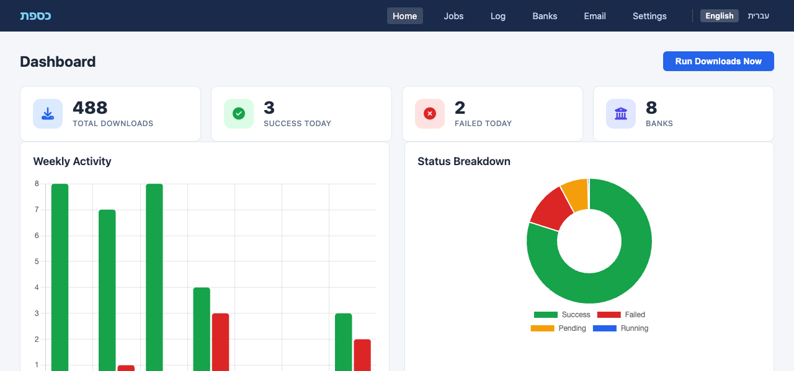
The dashboard provides at-a-glance system health: summary metric cards, a 7-day activity bar chart, status distribution doughnut chart, and a table of the 10 most recent downloads. The Run Downloads Now button allows manual triggering.
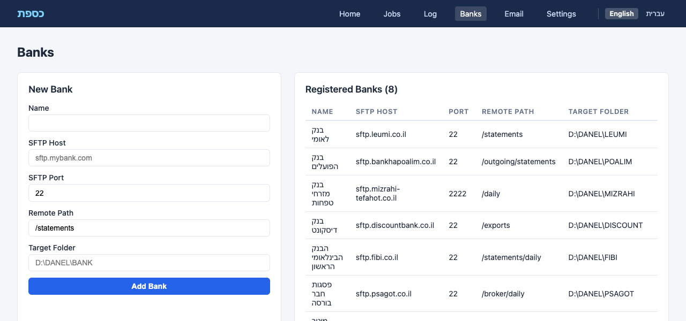
The banks page displays all registered banks in a table with SFTP details, ruler configuration, parser assignment, and target folder. A New Bank form allows adding banks with full configuration.
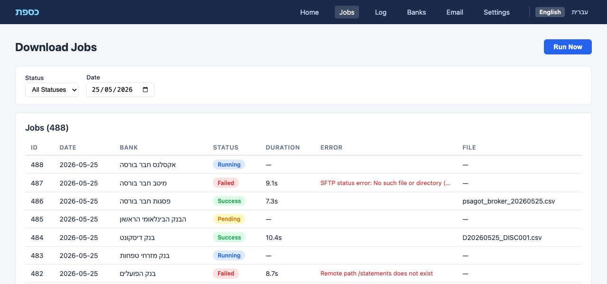
Real-time view of download jobs with status and date filters. Each row shows the bank, date, status badge, error message (if failed), file path (if successful), and timing information.
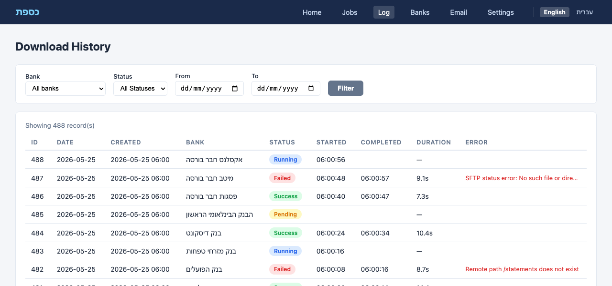
Full download audit trail with multi-criteria filtering: bank, status, and date range. Supports up to 500 records per view, ordered most-recent-first.
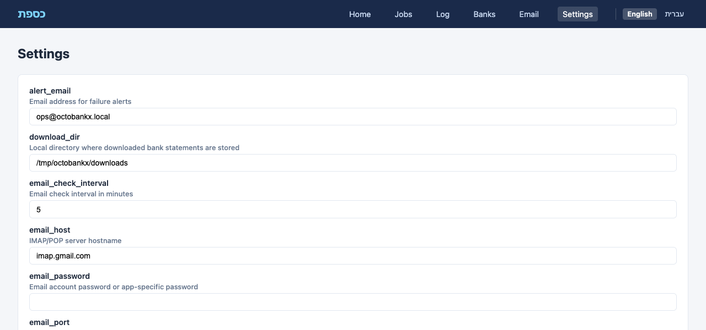
System-wide configuration editor for download directory, SFTP timeout, cron schedule, retry count, alert email, notification preferences, and data retention period.
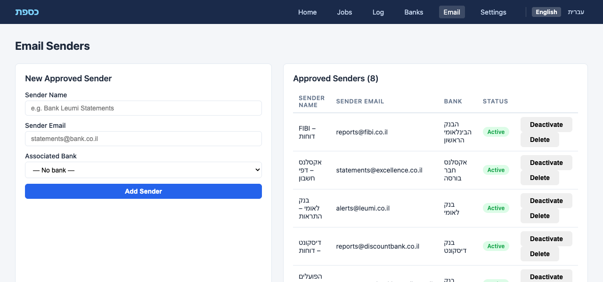
Manage approved email addresses for incoming statement files. Each sender is linked to a bank, can be toggled active/inactive, or deleted. A form allows adding new senders with email, name, and bank association.
OctoBankX provides a fully responsive mobile interface at
/mobile/, optimized for smartphones.
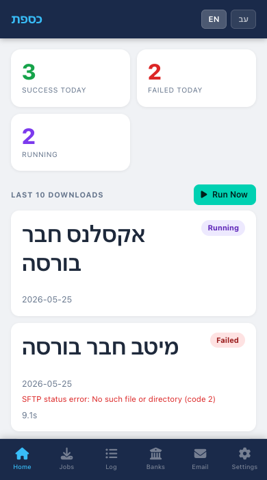
Compact summary counters and scrollable download card list.
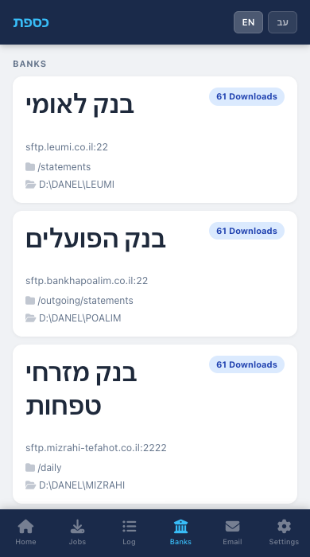
Bank cards with SFTP details and inline registration form.
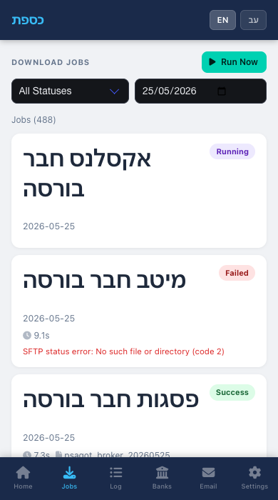
Compact card-based job list with status and date filters.
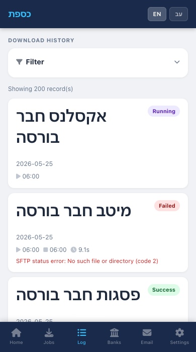
Scrollable log with filter controls at the top.
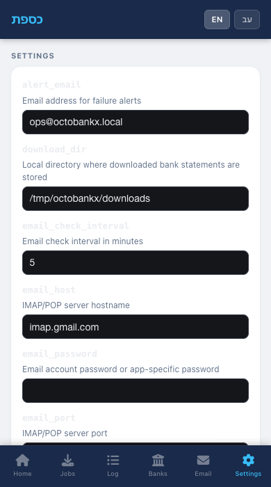
Mobile-optimized settings form with Switch to Desktop Version link.
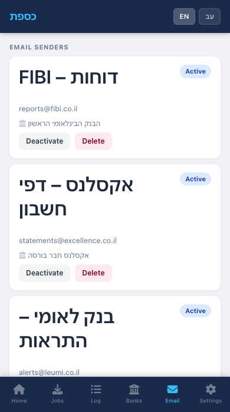
Card-based view of approved email senders with inline activate/deactivate and delete actions, plus an expandable form to add new senders.
All API endpoints are under /api/v1. Responses are JSON
(Content-Type: application/json).
| Method | Endpoint | Description |
|---|---|---|
GET |
/api/v1/downloads |
List downloads (filterable by status,
bank_id, date; supports
limit/offset) |
GET |
/api/v1/downloads/:id |
Get a single download record |
POST |
/api/v1/downloads |
Enqueue a download for a specific bank and date |
PATCH |
/api/v1/downloads/:id/status |
Update download status (running, success,
failed) |
| Method | Endpoint | Description |
|---|---|---|
GET |
/api/v1/status |
System health snapshot: total counts, today’s counts, last success/failure info |
[
{
"id": 42,
"bank_id": 2,
"bank_name": "בנק לאומי",
"date": "2026-05-25",
"status": "success",
"error_message": null,
"file_path": "/downloads/leumi/leumi_20260525_main.csv",
"started_at": "2026-05-25T06:00:01Z",
"completed_at": "2026-05-25T06:00:04Z",
"duration_s": 3.12,
"created_at": "2026-05-25T06:00:00Z"
}
]The daily job has two phases:
Phase 1 — Enqueue: For every bank in the system,
creates a Download record with
status: 'pending' for the given date. Banks that already
have a download record for that date are skipped (idempotent).
Phase 2 — Execute: Processes all
pending records:
status = 'running' and stamps
started_atSftpHelperstatus = 'success', stores
file_path, stamps completed_atstatus = 'failed', stores
error_message, stamps completed_atThe scheduler runs via rufus-scheduler in
config.ru. The cron expression defaults to
0 6 * * * (every day at 06:00), configurable via the
JOB_SCHEDULE environment variable or the
job_schedule setting.
The email listener job monitors a dedicated inbox for incoming statement files from approved senders:
email_senders table and is activeDownload record with
status: 'success'The job runs at the interval specified by
email_check_interval (default: 5 minutes).
bundle exec rake jobs:runPOST /api/v1/downloads to enqueue
a single bankOctoBankX supports two languages:
| Language | Locale | Layout |
|---|---|---|
| English | en |
LTR (left-to-right) |
| Hebrew (עברית) | he |
RTL (right-to-left) |


All UI labels, navigation items, status badges, flash messages, and form fields are fully translated. The layout automatically switches to RTL when Hebrew is selected.
OctoBankX comes pre-configured with 8 Israeli financial institutions:
| Bank | Parser | File Pattern |
|---|---|---|
| בנק לאומי (Bank Leumi) | LeumiParser |
leumi_YYYYMMDD_main.csv |
| בנק הפועלים (Bank Hapoalim) | PoalimParser |
HP_YYYYMMDD_001.csv |
| בנק מזרחי טפחות (Mizrahi Tefahot) | — | MZ_YYYYMMDD.csv |
| בנק דיסקונט (Discount Bank) | DiscountParser |
D_YYYYMMDD_DISC001.csv |
| הבנק הבינלאומי הראשון (FIBI) | FibiParser |
statement_YYYYMMDD.csv |
| Firm | File Pattern |
|---|---|
| פסגות חבר בורסה (Psagot) | psagot_broker_YYYYMMDD.csv |
| מיטב חבר בורסה (Meitav) | meitav_YYYYMMDD.csv |
| אקסלנס חבר בורסה (Excellence) | exc_YYYYMMDD.csv |
| Key | Default | Description |
|---|---|---|
download_dir |
/tmp/octobankx/downloads |
Local directory for downloaded statements |
sftp_timeout |
30 |
SFTP connection timeout in seconds |
job_schedule |
0 6 * * * |
Cron expression for daily job (6 AM) |
retention_days |
90 |
Days to keep download history |
max_retries |
3 |
Max retry attempts per bank per day |
alert_email |
ops@octobankx.local |
Email for failure alerts |
notify_on_fail |
true |
Send email on download failure |
email_protocol |
imap |
Email protocol (imap or pop) |
email_host |
imap.gmail.com |
IMAP/POP3 server hostname |
email_port |
993 |
IMAP/POP3 server port |
email_username |
kassefet-server@gmail.com |
Email account username |
email_password |
(empty) | Email account password or app-specific password |
email_ssl |
true |
Use SSL/TLS for email connection |
email_check_interval |
5 |
Minutes between inbox checks |
| Variable | Description | Default |
|---|---|---|
PORT |
HTTP server port | 9292 |
JOB_SCHEDULE |
Override cron schedule | from settings |
RACK_ENV |
Application environment | development |
SESSION_SECRET |
Session encryption key | random |
# Install dependencies
bundle install
# Set up database with seed data
bundle exec rake db:setup
# Start the application
PORT=9292 bundle exec puma config.ru -p 9292
# Or use the provided script
./start.shOctoBankX © 2026